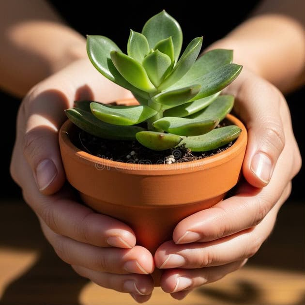

El autocuidado consiste en tomar decisiones conscientes para proteger tu salud física, mental y emocional. No requiere cambios drásticos, sino constancia en lo cotidiano.
Pausas conscientes: Dedica al menos 5 minutos al día a desconectarte de las pantallas y observar cómo te sientes.
Diario de gratitud: Al finalizar la jornada, anota tres detalles positivos o aprendizajes que hayas vivido.
Límites saludables: Aprender a decir "no" cuando tu energía está agotada es una forma fundamental de respeto personal.